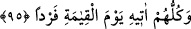

95. Onların hepsi de kıyamet gününde O’nun huzuruna tek başına (yapayalnız)
gelecektir.
“Onların hepsi de kıyamet gününde O’nun huzûruna” yani Allâh’ın huzûruna
kendisine tâbi ve yardımcı olanlardan ayrılarak “tek başına gelecektir.” Çocuk
edinmesi için onlardan kimse O’na cins olamaz ve O’na ortak olması için de kimse Ona
münasib olamaz.
Kudsî bir hadîste şöyle buyrulmuştur: “Âdemoğlu Beni tekzib etti, ancak Beni tekzib
etmek ona yakışmaz.” Bilakis bu bir hatâ olur. “Âdemoğlu hakkımda münâsib olmayan
söz sarfetti,” “eş-Şetm” bir kimseyi içinde noksanlık ve aşağılama içeren sözlerle
vasfetmektir. “Ancak bu ona yakışmaz.”
“Tekzîbine gelince, bu onun “Allah, beni ilk olarak yarattığı gibi tekrar
diriltmeyecek” yani Allah, beni yarattığı gibi öldükten sonra asla diriltmeyecek
“demesidir. Halbuki, ikinci sefer tekrar diriltmek bana, yoktan var etmeye nazaran
zor gelecek bir iş değildir.” Aksine asıl bünye mevcûd olduğundan dolayı ikinci sefer
tekrar diriltme daha kolaydır. Bilesin ki bu, temsil tarzında bir anlatımdır. Çünkü bir
şeyi ikinci defa yapma (iâde) bizim güçlerimize göre ilk defa yapmaktan daha kolaydır.
Allâh’ın kudretine göre düşünürsek O’nun için kolaylık ve zorluk diye bir şey yoktur.
“Hakkımda sarf ettiği münâsib olmayan söze gelince bu onun “Allah çocuk edindi”
demesidir.” Şüphesiz bu, aşağılamadır. Çünkü çocuk edinmek (üremek), artıcı oluşu
dolayısıyla bütünden bir parçanın ayrılması demektir. Bu da mürekkeb bir şeyde
düşünülebilir. Her mürekkeb onu birleştiren bir şeye (müellife) muhtaçtır. Çünkü
üremedeki hikmet, babalar yok olduğunda nesli korumaktır. Allah Teâlâ ise zâtına
yakışmayan böyle şeylerden münezzehtir, yücedir.
Eğer “Allah … edindi” sözü de yalanlamadır. Çünkü Allah Teâlâ çocuğu olmadığını
haber vermiştir. Yine “Beni … tekrar diriltmeyecek” sözü de münâsib olmayan bir
sözdür. Çünkü bu, Allâh’a âcizlik isnâd etmektir. Peki, neden bunlardan birisi münâsib
olmayan söz, diğeri yalanlama sayılmıştır?” dersen, ben cevaben şöyle derim: “Tekrar
diriltmeyi kabul etmemek, kemâl sıfatını kabul etmemektir. Evlâd edinmek ise Allâh’a
noksan sıfat izâfe etmektir. Kötü söz söylemek ise yalanlamadan daha çirkindir. Bundan
dolayı Allah onu, en etkili ifâdelerle reddetmiş ve şöyle buyurmuştur:
“Halbuki ben bir tekim,” yani, kendime yakışmayan şeylerden uzak olma, ebedîlik ve
benzeri kemâl sıfatları bakımından bir tekim “samedim,” bütün ihtiyaçlarda kendisine
yönelinenim “doğurmayan,” bu ifâde onu başkalarına benzetmeyi ve hemcinsi olmasını
reddetmektedir “doğurulmayan,” ki bu ifâde O’nu kadîm ve ilk olmakla vasfetmektedir
“hiçbir misli bulunmayanım.”[47] Bu ifâde de önceki ifâdeleri pekiştirmektedir.
Eğer “Allâh’a geçmişte bir şeyin denk olmadığını söylemek, şimdi ve gelecekte de
olmayacağını gerektirmez.” dersen, sana şöyle cevap veririm: Gerektirir; çünkü
geçmişte bir şey mevcûd olmayıp da sonradan olmuşsa o, hâdis/sonradan olmadır.